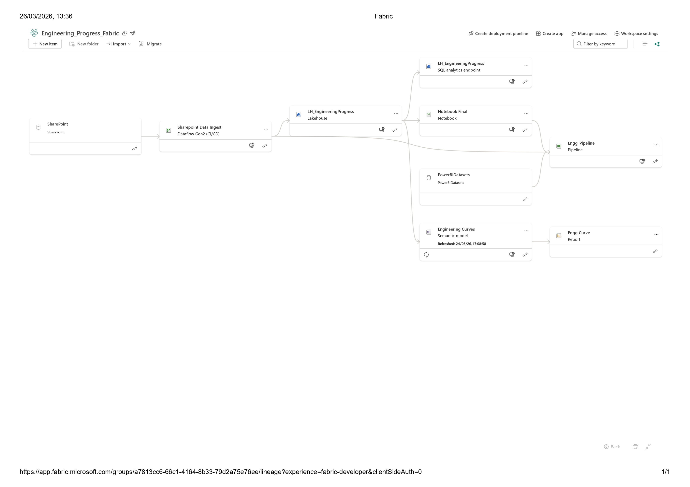
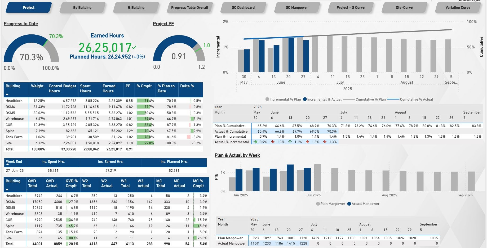
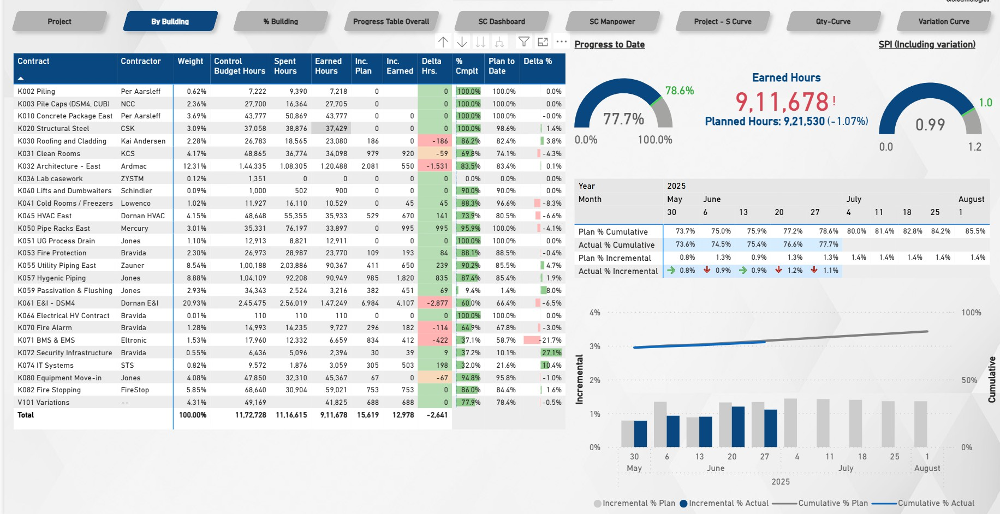
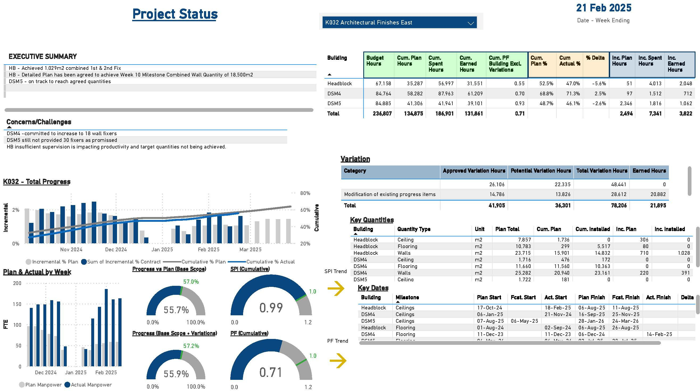
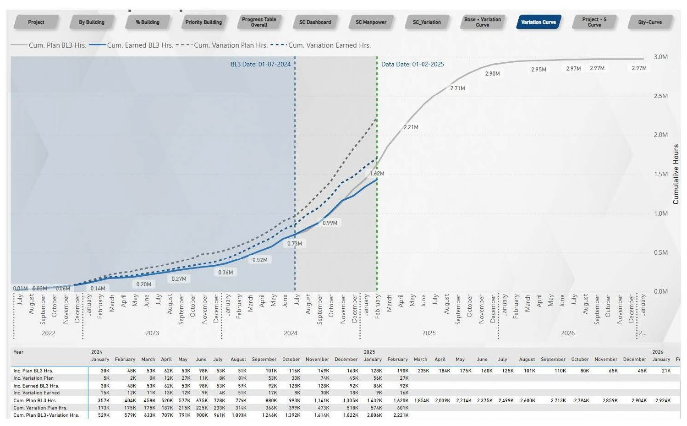
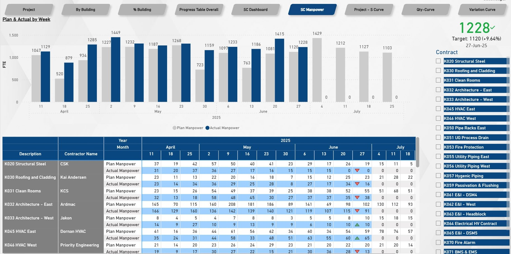
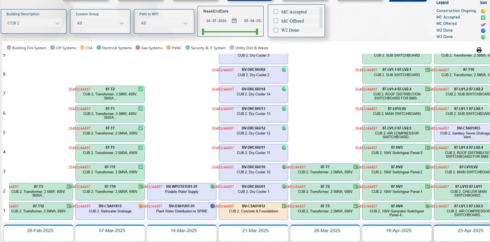
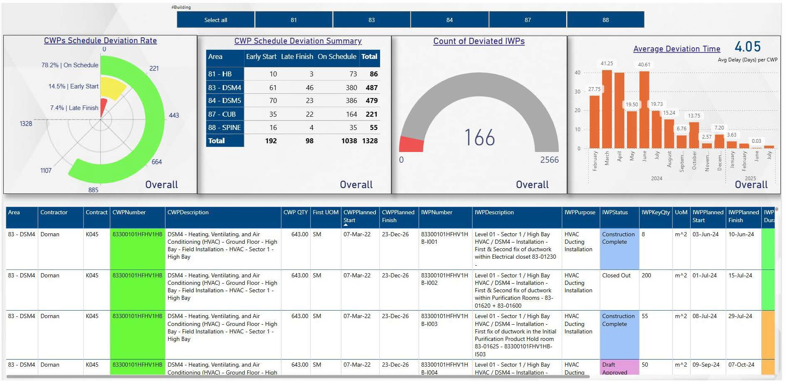
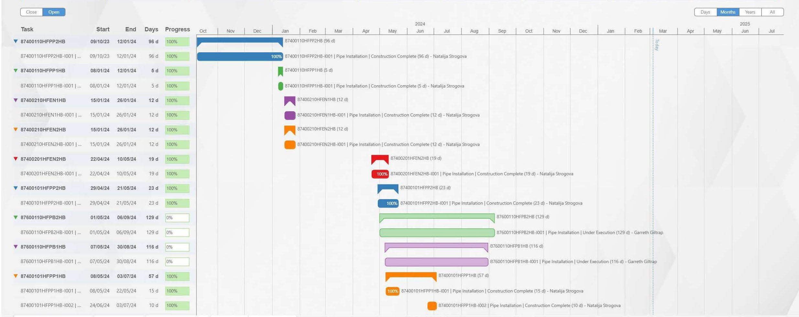

Priyanshu Upadhyay
Data Analyst • Microsoft Fabric • Power BI • SQL • Engineering Analytics
Data Analyst • Microsoft Fabric • Power BI • SQL • Engineering Analytics

Built an enterprise data pipeline using Fabric Lakehouse, Dataflows Gen2, Notebooks, and SQL Endpoint.

Real-time progress tracker with KPIs, SPI/CPI, manpower curves, and engineering performance.

Displayed 42.4% completion metrics, contractor performance, unit progress, and monthly trends.

Tracked FTE utilization, milestone dates, and billing analysis for 20+ contractors.

4-year trend modeling for cumulative & incremental hours with predictive reporting.

Analyzed labor trends, variance, and weekly plan vs actual for all contractors.

Tracked multi-system commissioning readiness and milestone timelines.

Built deviation insights across multiple packages to reduce delays.

Tracked dependencies, durations, and milestone completion using Power BI Gantt visuals.
Email: your@email.com
LinkedIn: linkedin.com/in/priyanshuupadhyay
GitHub: github.com/priyanshu190920